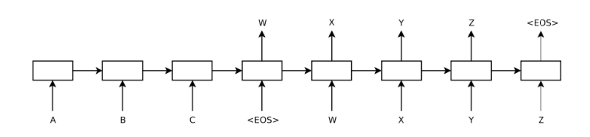

Abstract
- Deep Nueral Network는 복잡한 task에 놀라운 성능을 보여왔지만 sequence에서 sequence를 mapping에서는 task에서는 잘 사용되지 못했습니다.
- 논문에서는 sequence의 구조에 대한 최소한의 가정만으로 학습하는 end-to-end approach를 소개한다.
Problem Setting
- DNN(RNN)은 구조상 input과 output의 길이가 같은 sequence의 mapping만 학습할 수 있다는 문제점이 있습니다.
- 대부분의 sequence to sequence 사전에 길이를 제한하지 않아야 좋은 표현을얻을 수 있기 때문에 이는 큰 한계라고 할 수 있습니다.(ex,question answering)
- 논문에서는 이러한 문제를 극복하고 일반적인 sequence to sequence task를 풀 수 있는 Neural network architecture를 소개합니다.
Method
Intuition

(대략적인 설명)
- 먼저 LSTM에 Input sequence를 each time step마다 각각 입력합니다.
- 마지막 토큰인 \(\text{<EOS>}\)이 입력되고 난 후 context vector(\(\bf{v}\))를 얻는다.
- \(\bf{v}\)를 또 다른 LSTM의 입력으로 사용합니다.
- LSTM은 each time step마다 하나씩 하나씩 출력 sequence 출력합니다. 이는 <EOS>를 만날때 종료됩니다.
(context vector란?)
- context \(\bf{v}\)는 input sequence보다 적은 차원을 가지며 모든 input에 대해서 고정된 크기를 가지는 벡터이다.
- \(\bf{v}\)는 sequence의 의미를 포착하여 핵심정보만 가져온 축소된 표현입니다.(비슷한 의미를 가지는 문장은 거리가 가깝고 완전 다른 의미라면 거리가 멀다.)
(왜 하필 LSTM?)
- LSTM는 당시에는 긴 문장을 처리할 수 있는(long range temproal dependencies) state of the art였기 때문에 LSTM 위주로 설명되어 있습니다.
- 더 성능이 잘 나온다면 얼마든지 다른 모델도 사용할 수 있습니다.(ex GRU 등등…)
(Note)
- 고정된 크기의 context vector로 mapping되기 때문에 output sequence를 내놓기 위해 필요한 정보가 사라질 수 있습니다. (고정된 context vector의 한계)
- context vector를 lstm에 입력하여 \(\text{<EOS>}\)토큰을 만날때까지 출력하기 때문에 input과 output sequence의 길이는 다릅니다. (기존의 many to many RNN과의 차이점)